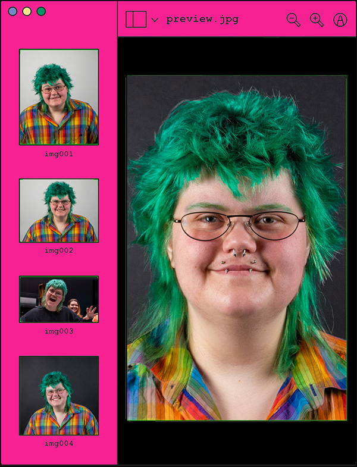

Heya!
My name is Nohr Schousen Boje and I'm a 21 year old multimedia design student at UCL in Odense. I’m passionate about photography and graphic design. I love expressing my personality and interests through my work.
I have throughout my younger years been interested in programming and have learned a few languages in high school. I chose to take a robotic education at SDU Odensen, where I learned Java. Although I liked and learned a lot from robotics, I quickly found out I wanted to make work where I could express myself more and incorporate my love for photography and graphic design.
I have been taking pictures and making art since I was little. It has always been important for me to be able to see the personality of the person behind the work and I will never believe a personality can be boring.
